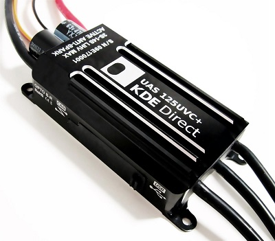
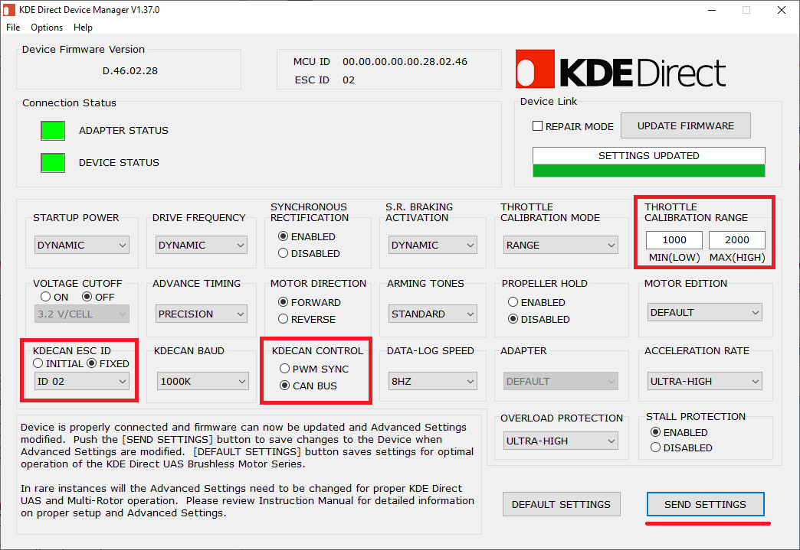
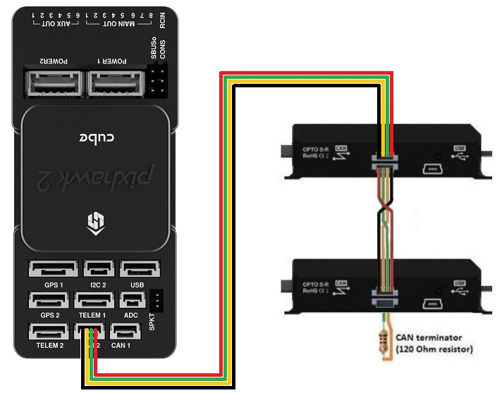

KDE CAN ESCs¶
KDECAN ESCs are high-end ESCs that allow control and feedback using a custom CAN protocol
Note
Please use Copter-4.1 (or higher), Plane-4.1 (or higher) or Rover-4.1 (or higher) with these ESCs because while earlier versions of ArduPilot supported them, there were issues with the range and motor ordering which made the setup difficult.
Where To Buy¶
KDE-UAS125UVC-HE and KDE-UAS85UVC can be purchased from KDEDirect.com (other KDE ESCs may also support CAN, check the images of the ESC, those with “CAN” written on the side should work).
KDECAN Wire Kit is also required
Configuring the ESCs¶
KDE’s instructions for connecting and configuring with ArduPilot are here
Download, install and run the KDE Direct Device Manager
Connect the first ESC to your PC with a USB cable and configure the device as shown below
Repeat the configuration of all other ESCs increasing the “KDECAN ESC ID” by one each time. It is best to label the ESC with a number that is the ESC ID - 1. Somewhat confusingly the lowest ESC IDs is 02 but this will mirror the autopilot’s SERVO1 output
{kind=link}
Connecting the ESCs¶
The 4-pin cable connecting the first ESC to the autopilot’s CAN1 port must have all pins swapped on one end (ideally on the end connecting to the first ESC). Pin1 (red) should be swapped with Pin4. Pin2 should be swapped with Pin3. This modified cable should be used to connect the autopilot’s CAN1 port to the first ESC
The ESCs should be daisy chained together using the KDECAN Wire Kit. The CAN terminator (the 4-pin connector with a black loop) should be connected to the last ESC in the chain

{kind=link}
Warning
If using a CubeBlack autopilot, the CAN1 and CAN2 labels are reversed. These instructions assume the ESCs are connected to the CAN1 port which is labelled “CAN2” on CubeBlack autopilots
配置¶
Set CAN_D1_PROTOCOL = 8 (KDECAN)
Set CAN_P1_DRIVER = 1 (First driver) to specify that the ESCs are connected to the CAN1 port
Set MOT_PWM_MIN = 1000 and MOT_PWM_MAX = 2000 so ArduPilot uses an output range that matches the ESCs input range
Set KDE_NPOLE to the number of poles on the motor (Note it may be necessary to reboot the autopilot to cause this parameter to appear). If you are not sure of the number, you can probably count them by looking closely into the top of the motor. Even if set incorrectly the motors should spin normally because this number is only used to calculate the RPM reported to the ground station and stored in the onboard logs
Logging and Reporting¶
KDECAN ESCs provide information back to the autopilot which is recorded in the autopilot’s onboard log’s ESCn messages and can be viewed in any ArduPilot compatible log viewer. This information includes:
RPM
Voltage
Current
ESC Temperature
Total Current
The RCOU messages are also written to the onboard logs which hold the requested output level sent to the ESCs expressed as a number from 1000 (meaning stopped) to 2000 (meaning full output).
This information can also be viewed in real-time using a ground station. If using the Mission Planner go to the Flight Data screen’s status tab and look for esc1_rpm.

Note
Sending ESC data to the GCS requires using MAVLink2. Please check the appropriate SERIALx_PROTOCOL parameter is 2 (where “x” is the serial port number used for the telemetry connection).